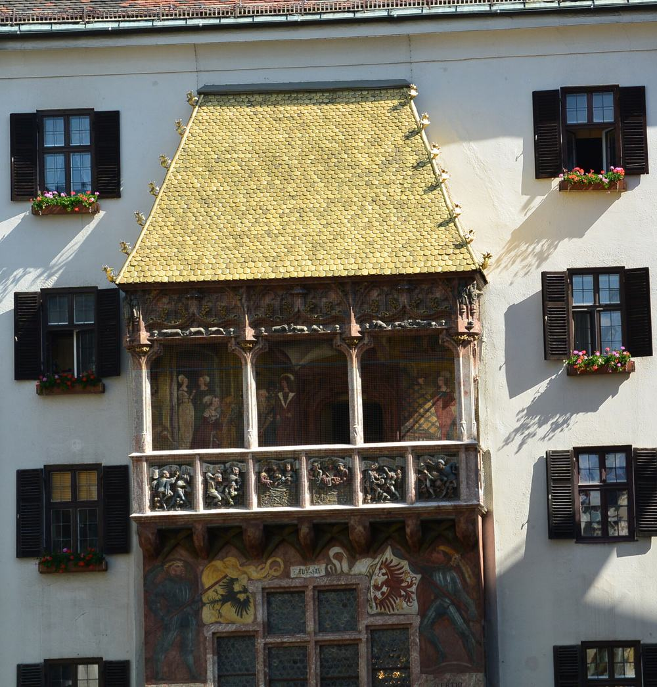
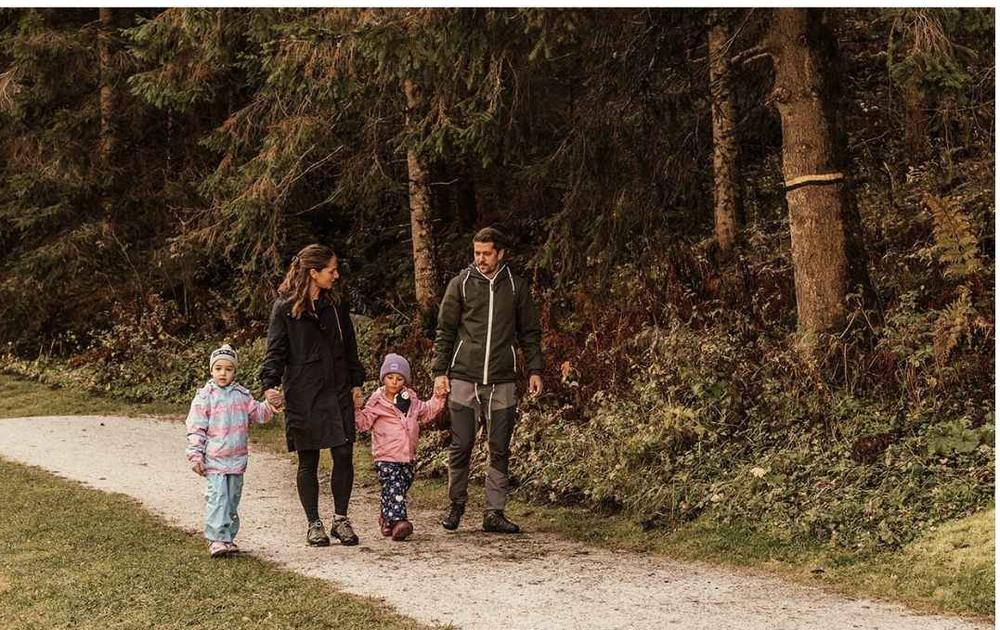
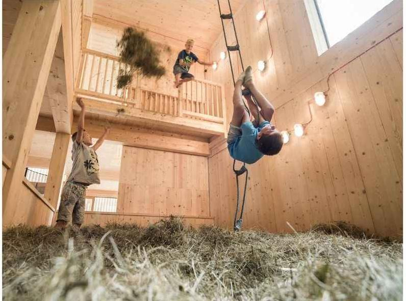
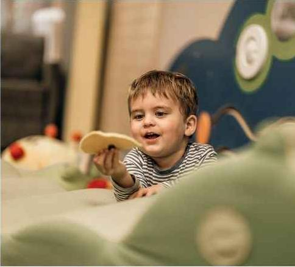
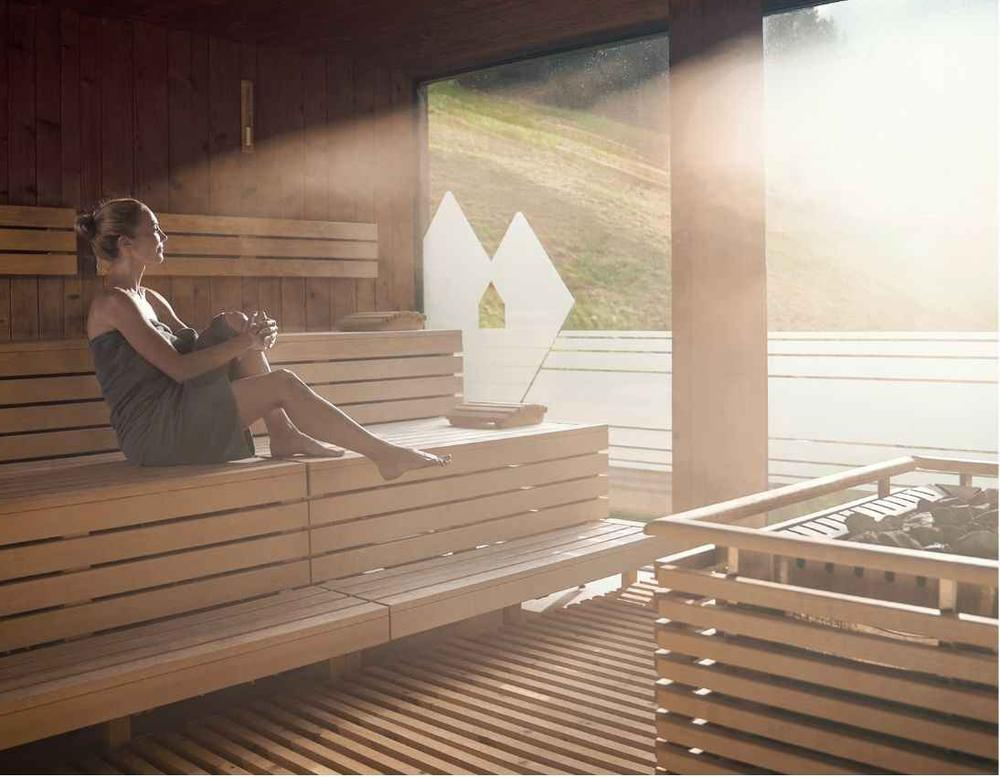
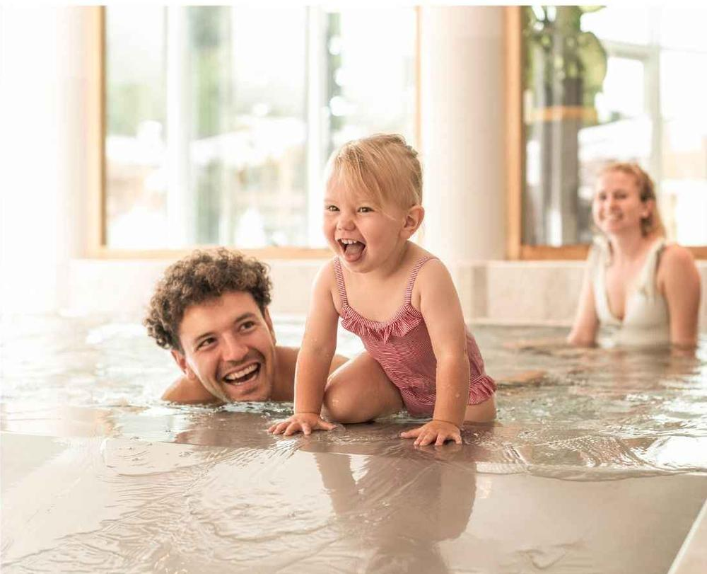
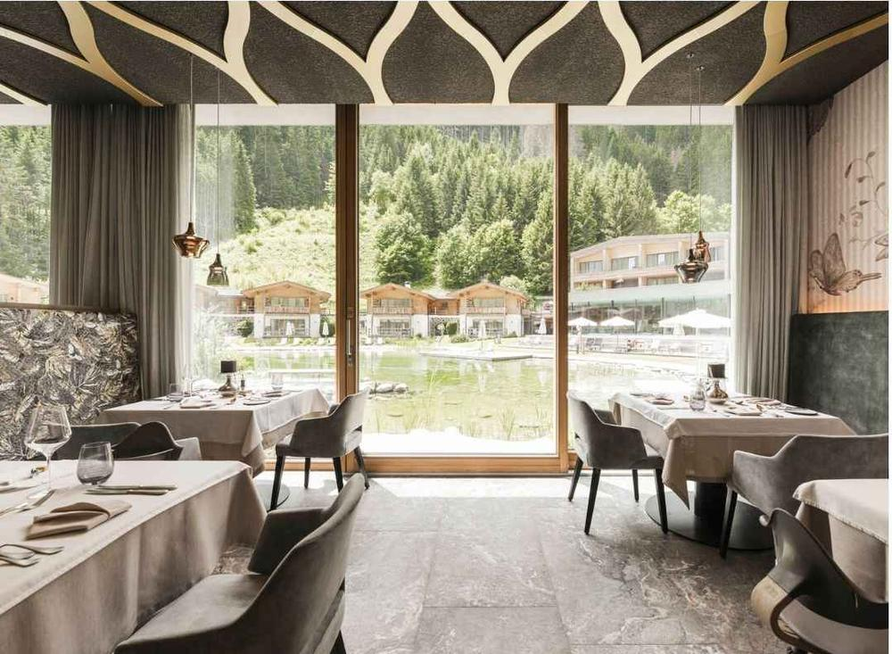
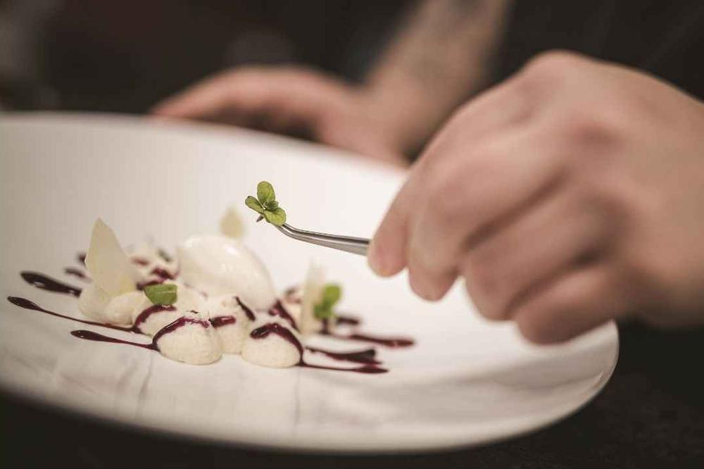
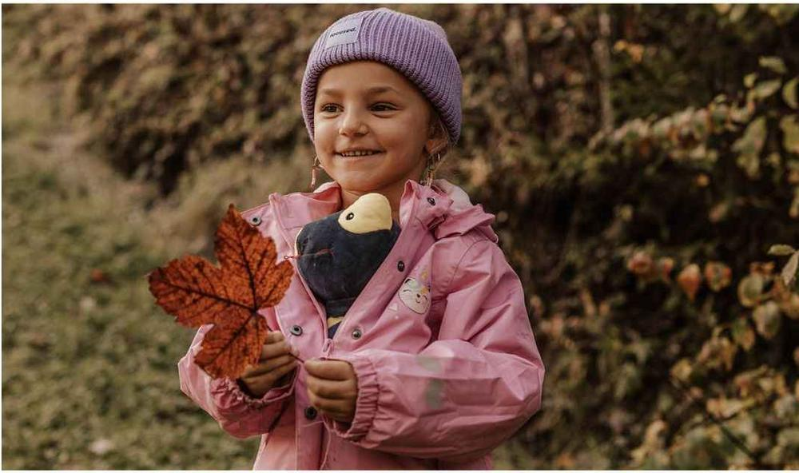

Праздничное приключение для Сони, Давида и Жени
Он откроется, когда ты сядешь в машину. До этого — только чемодан и вторая вкладка.
Честно в машине? Ремень пристёгнут, Давид рядом, утюг выключен?
Через Арльберг в Инсбрук, там ночуем, утром через Бреннер в Южный Тироль. Все дороги — около 330 км в одну сторону.
Все в машине. Выезжаем под песню «Красный локомотив».
Дорога идёт вдоль озера под отвесными скалами Курфирстен. Смотри направо.
Граница с Австрией.
Короткая остановка на ужин, пока Давид не начал переговоры.
14 км под горой — самый длинный автодорожный тоннель Австрии.
Если остались силы — вечерняя прогулка по старому городу до Золотой крыши. Если нет — спать.
Наш отель на ночь

Под старыми сводами у Золотой крыши. Яблочный, творожный или тыквенно-имбирный штрудель — можно все три.
Strudel-Café Kröll
Мост на высоте около 190 м над долиной Зилль. Самая высокая точка над землёй за всю поездку.
Граница с Италией. Дальше Южный Тироль: по-немецки говорят, по-итальянски готовят.
Тупиковая долина, дальше дороги нет — только горы и наш отель. Обед с 12:30, номер с 15:00, бассейны и спа сразу.
Feuerstein Nature Family Resort

Монтессори, мастерская из дерева, комната для игр в грязи, альпаки и пони. Он будет занят. Ты — свободна.


Сауны, тихие комнаты и джакузи на крыше с видом на горы. Книгу можно взять, телефон лучше нет.

Забираем Давида из клуба и плещемся все вместе.

Вот для этого и нужно вечернее платье.


Домой поедем, когда решим.

С приближающимся днём рождения! Пристегнись.
Горы, середина октября: днём 10–15° и солнце, утром и вечером холодно. Одеваемся капустой. Правило чемодана: сомневаешься — не бери.
Планируй гардероб с учётом этого исторического события.
В детском клубе есть комната для игр в грязи, а ещё ферма и пони. Сменной одежды вдвое больше, чем подсказывает здравый смысл.